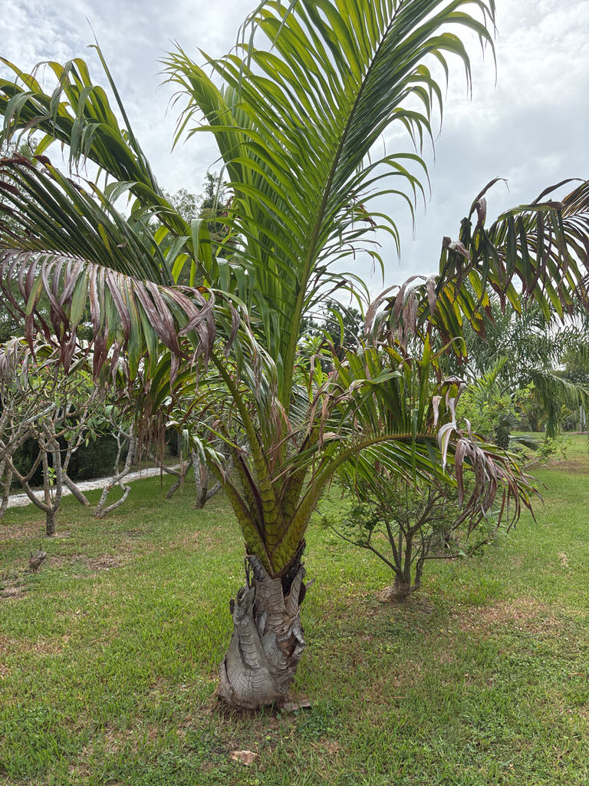

- This palm gets exactly one shot at reproduction — then it dies. It may spend 20 to 25 years or more simply growing before it produces a single towering flower spike, sets its seeds, and the whole plant dies.
- The rows of brown spines along the leaf bases aren't just a hazard on the living palm. Fallen fronds keep their spines — so even a dead leaf lying on the ground can give you a painful jab.
- Three very different plants share the name 'sago palm' in Florida. The familiar one in local nurseries is actually a cycad. The true starch-producing sago is a different species from Southeast Asia. The word 'sago' describes a product, not a family — and this is the rarest of the three, the only one actually from Fiji.
- Because this palm is solitary and can never produce suckers or offsets, living specimens outside its shrinking natural range can be important insurance against the loss of wild populations — but only if managed with that purpose in mind.
The Fiji Sago Palm is native to Fiji and the nearby Wallis and Futuna Islands, where it grows in lowland swamp forests and river valleys on consistently wet clay and alluvial soils. Its native range is centered on Viti Levu and Ovalau, with a single occurrence recorded on Vanua Levu near Savusavu.
This palm was once far more widespread. Pollen preserved in sediment cores from swamp sites across Viti Levu and Vanua Levu confirms the species formerly covered much more of the archipelago's lowland wetlands. Conservation surveys document that it was once abundant throughout the Navua and Rewa River Deltas — territory where, today, only scattered remnant stands survive.
That contrast — extensive former range, highly fragmented present distribution — is the core of its conservation story, and it explains why the specimen growing here matters. It is not native to, and does not naturalize in, Florida; Fairchild Tropical Botanic Garden in Miami is among the institutions that have cultivated it.
- This palm is monocarpic: it flowers and fruits only once in its entire life. The only confirmed growing period from germination to mature fruit on record is 24 years, and some individuals likely take longer. After that single enormous reproductive event — a towering flower spike rising above the crown, followed by 12 to 15 months of fruit development — the plant dies.
- There is no second chance and no replacement trunk.
- That biology makes the loss of an adult palm especially serious. When an adult is cut for its edible heart — a practice documented in Fijian communities and a growing commercial pressure — the entire palm dies instantly.
- Because the species is strictly solitary and never produces suckers, there is nothing left behind, and the gap in the population may take decades to close even if conditions are right for germination.
- The name 'sago palm' creates a reasonable expectation that this palm was historically important as a starch source in Fiji. It wasn't. The conservation literature notes that of all Pacific Island peoples, Fijians appear to have made the least use of sago: there is no record of Fijians eating sago starch even as a famine food.
- The main traditional uses documented for this species are thatching with its long leaves and, more recently, harvest of the palm heart.
- The thatching use has become a conservation problem of its own. Growth in Fiji's tourism industry created strong demand for sago palm leaves to thatch resort structures, and unsustainable harvesting — with no replanting in harvested areas — has contributed to an almost 50% reduction in the size and distribution of surviving populations.
- The species name vitiense means 'of Viti,' the traditional Fijian name for Fiji, and the palm's Fijian name soga (also sogo) is the name used throughout the conservation literature.
In Fiji, the large scaly fruits are eaten by bats and the Masked Shining Parrot, and both can help disperse the seeds away from the parent palm. The buoyant fruits can also travel by water — an especially useful adaptation for a palm that grows along rivers and in swampy ground. Together, these give the palm several ways to move its seeds: by bird, by bat, and by water.
In Florida cultivation, the palm's wildlife interactions are minimal. The once-in-a-lifetime flowering produces a substantial inflorescence that may attract pollinating insects, but the species has no co-evolutionary history with Florida's native fauna, and no record of serving as a larval host or meaningful nectar source for local butterflies or moths.
Propagation is by seed. Unlike clustering palms, it does not normally produce suckers or offsets. Each individual flowers only once, produces its seeds over 12 to 15 months, and then dies. The only confirmed growing period to flowering on record is 24 years, and some individuals likely take longer — treat 'roughly 20 to 25 years or more' as the best current estimate.
At maturity the palm produces a massive, twice-branched flower spike that rises high above the leafy crown and can reach about 13 feet (4 meters) in height. Flowers are numerous and small. This arrangement — emerging above rather than between the fronds — is unusual among palms of this size.
Fruits are roughly 2 to 2.5 inches long and about 2 inches wide, covered in 25 to 27 rows of yellow-brown scales that give them a reptilian texture. Color varies across individuals within the same stand, ranging from green to golden-yellow to dark brown or grey as they mature. Seeds are large and buoyant, helping them travel through wetland habitat.
Feather-like fronds that can reach 5 to 7 meters in length attach directly to the trunk — there is no smooth green sleeve (crownshaft) as on many other palms. Dead fronds persist on the trunk for some time before falling. The leaf bases and petioles bear rows of stiff brown spines — handle with care.
Solitary and unbranched, reaching 5 to 15 meters in height and up to 50 cm in diameter. The trunk takes on a tattered appearance as old frond bases cling to the upper stem. Toward the end of the palm's life, as fruiting concludes, the fronds progressively die back and the trunk follows.
Look at the base of the lowest fronds first: rows of dark brown spines run along the leaf bases and petioles, and fallen fronds keep their spines, so give this palm a wide berth. The long feather-like fronds attach directly to the trunk without a smooth crownshaft, and older fronds often remain attached, giving the upper trunk a somewhat ragged appearance.
If the palm is approaching the end of its life, watch for the extraordinary flower spike rising above the crown — its one and only flowering event. If fruit is present, look for the large, reptile-scaled fruits hanging below the flower structure.
The frond bases and petioles carry rows of stiff brown spines that can deliver a painful jab — give the fronds a wide berth, and be aware that fallen fronds can retain their spines for some time.
The palm heart is edible in some Fijian communities, but harvesting it requires cutting down the entire palm; because this species is solitary with a single growing tip, harvesting kills the plant permanently with no sucker or offset to take its place. Please do not harvest or disturb this specimen. No specific toxicity to people, dogs, or cats is documented.
Metroxylon vitiense is listed as Endangered on the IUCN Red List (2022.2 assessment, IUCN taxon ID 177604). The species was formally assessed as Vulnerable in 1998; conservation literature and the Kew Plants of the World Online record now reflect the Endangered category. Some older sources still display the 1998 Vulnerable rating.
The scale of decline is striking. This palm was once abundant throughout the Navua and Rewa River Deltas of southeastern Viti Levu. Today only about 15 isolated populations survive on Viti Levu and Ovalau, most of them significantly threatened. Habitat drainage, agricultural conversion, and unsustainable harvesting have all contributed.
This is a cold-sensitive tropical palm that prefers a minimum temperature around 17 °C (63 °F) and is not frost-tolerant; horticultural sources place it in USDA Zone 10b at best. Because it is a solitary palm with a single growing tip, any cold event that damages or kills the apical meristem is fatal to the entire plant — there are no offsets or suckers to carry on.
Unusual freezes in Bradenton are worth monitoring and mitigating.


- © Randall Carter (CC-BY-NC), via iNaturalist